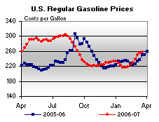

Released on March 21, 2007
(Next Release on March 28, 2007)
The Weakest Link
While new television game shows, such as “Are You Smarter Than a 5th Grader” and “Deal or No Deal”, are gaining in popularity, those watching oil markets closely cannot help but be reminded of an older show, the “Weakest Link,” when observing the price of West Texas Intermediate (WTI) crude oil over the last several days. As the WTI spot price (for April delivery) fell by more than $5 per barrel from the beginning of this month to Monday, March 19, spot prices for other crude oils were much steadier, as shown in the following table:
| WTI | -$5.32 per barrel |
| Alaska North Slope | -$4.57 per barrel |
| Malaysia Tapis | -$2.96 per barrel |
| Dubai Asia | -$2.20 per barrel |
| OPEC Basket | -$1.72 per barrel |
| Nigeria Bonny Light | -$0.94 per barrel |
| Brent Dated | -$0.69 per barrel |
| MARS Blend | +$0.18 per barrel |
Clearly, WTI is the weakest link in oil markets. So, what does this tell us about likely oil price developments in the immediate future?
First, it is important to understand why WTI is the “weakest link,” where the term weak is a commodity term defined as a market that has prices declining and strength is a commodity term that refers to a market in which prices are increasing. There has been a significant amount of refinery maintenance in areas (the Gulf Coast and the Midwest) that would tend to use WTI, thus reducing the physical demand for it. Additionally, crude oil inventories in the United States, including those in the Gulf Coast, Midwest, and Cushing, OK, the delivery point for WTI, are relatively high compared to elsewhere, so until very recently, incremental crude oil barrels were flowing to other parts of the world, which along with fog-related problems, helps to explain why crude oil imports were relatively low until this past week. Finally, the April futures contract for light, sweet crude oil on the New York Mercantile Exchange, which is closely associated with the spot price for WTI, expired yesterday (March 20). As the contract was coming to a close, it may have brought forth a wave of sellers trying to balance their accounts, putting downward price pressure on WTI.
However, the WTI price is likely to strengthen relative to the prices of other crude oils as Gulf Coast and Midwest refineries come back from maintenance and the physical demand for WTI increases. In fact, both futures and spot prices for May delivery have reflected the expectation that crude demand will rise seasonally in May, as most of a relatively heavy maintenance schedule winds down after April. As such, May spot and futures prices have softened much less than April, trading close to $60 per barrel throughout the first 19 days of March. Hence, with today the first day that the May futures contract trades as the near-month contract, both prompt-month futures and May spot prices continue to fluctuate around $60 per barrel this morning. Meanwhile, the spot price for conventional gasoline in New York Harbor climbed 6 cents per gallon (equivalent to $2.52 per barrel) between March 1 and March 19, providing support for crude oil prices from the refined petroleum product that will be the market’s primary focus over the next few months. As a result, oil markets were probably tighter than the now expired April WTI price might have indicated earlier in the week. Dated Brent crude oil prices, as well as some of the other world crude oil prices, may have better reflected oil market balances over the last week or so. As such, unfortunately for consumers, prospects appear dim for a significant drop in near-term WTI prices anytime soon, particularly if the rest of the market signals are taken into account.
Retail Gasoline Prices Up, Diesel Falls Slightly
Gasoline prices were up for the seventh consecutive week, increasing 1.8 cents to 257.7 cents per gallon as of March 19, 2007. Prices are now 7.3 cents per gallon higher than at this time last year. All regions reported price increases. East Coast prices were up 2.0 cents to 255.3 cents per gallon, while Midwest prices rose 0.3 cent to 249.0 cents per gallon. Prices for the Gulf Coast were up 1.6 cents to 241.8 cents per gallon. The largest regional increase was in the Rocky Mountains, where prices increased 9.0 cents to 250.2 cents per gallon. West Coast prices were up 2.6 cents to 294.6 cents per gallon, with the average price for regular grade in California up 1.0 cent to 307.8 cents per gallon, 44.3 cents per gallon above last year’s price.
Retail diesel prices fell slightly this week, decreasing 0.4 cent to 268.1 cents per gallon. However, prices remain 10.0 cents per gallon higher than at this time last year. East Coast prices fell 0.8 cent to 266.1 cents per gallon. Midwest prices were down 0.7 cent to 266.6 cents per gallon, while the Gulf Coast saw a decrease of 0.4 cent to 264.0 cents per gallon. Rocky Mountain prices were up 2.9 cents to 276.5 cents per gallon. Prices on the West Coast saw an increase of 0.2 cent to 281.3 cents per gallon. California prices fell 2.4 cents to 287.5 cents per gallon, and are 13.7 cents per gallon higher than at this time last year.
Propane Inventories Sharply Lower
The pace of propane inventory withdrawals picked up last week following a late winter cold spell that contributed to lower the nation’s primary supply of propane by 1.8 million barrels, a relatively strong stockdraw for this time of year. The unseasonable weather extended the same pattern of cold temperatures experienced over many portions of the nation seen during the second half of the heating season, which if continued, has the potential to push propane inventories down to near their lowest end-of-March level since 2003. Regionally, weekly inventory activity was mixed, with East Coast inventories moving up by 0.1 million barrels while at the same time remaining unchanged in the Midwest and the combined Rocky Mountain/West Coast regions. However, Gulf Coast inventories more than offset inventory activity in these regions with a reported 1.9-million-barrel decline last week. Propylene non-fuel use inventories fell by 0.3 million barrels last week to account for a 12.2 percent share of total propane/propylene inventories, down only slightly from the prior week’s 12.5 percent share.
Text from the previous editions of “This Week In Petroleum” is now accessible through a link at the top right-hand corner of this page.
| Retail Prices (Cents Per Gallon) | |||||||
|  | |||||||
| Retail Data | Changes From | Retail Data | Changes From | ||||
| 03/19/07 | Week | Year | 03/19/07 | Week | Year | ||
| Gasoline | 257.7 | Diesel Fuel | 268.1 | ||||
| Spot Prices (Cents Per Gallon) | |||||||||||||||||||||||||||||||||||||||
|
|||||||||||||||||||||||||||||||||||||||
| Stocks (Million Barrels) | |||||||
| Stocks Data | Changes From | Stocks Data | Changes From | ||||
| 03/16/07 | Week | Year | 03/16/07 | Week | Year | ||
| Crude Oil | 329.3 | Distillate | 118.7 | ||||
| Gasoline | 210.5 | Propane | 25.863 | ||||